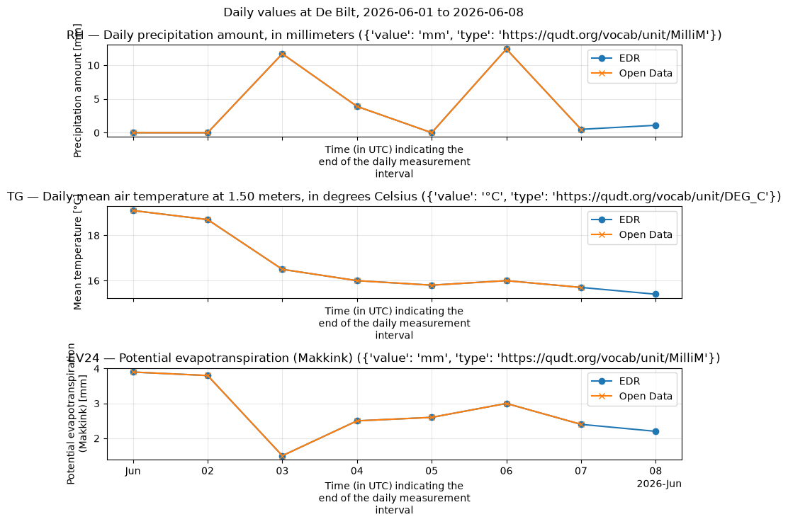
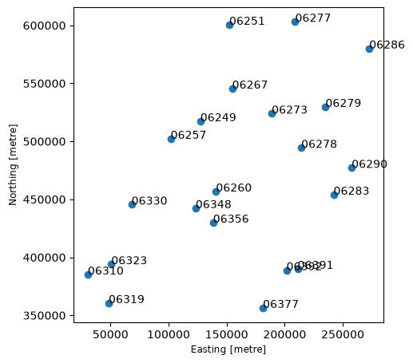

Daily weather observations from KNMI: Open Data API vs EDR API¶
This notebook shows how to get data from the KNMI Data Platform with the knmidata Python package, using the dataset daily-in-situ-meteorological-observations (daily observations from the Dutch automatic weather stations).
We fetch the same dataset through both APIs and compare:
Open Data API — download whole files (NetCDF) and open them as one
xarray.Dataset.EDR API — run spatio-temporal queries (location / area), parse the response into an
xarray.Dataset, and plot the time series of precipitation (RH), temperature (TG) and evaporation (EV24) at De Bilt.
How KNMI data is organized¶
The KNMI Data Platform (
dataplatform.knmi.nl) is the data catalog. Everything in it is a dataset with a unique name and version (e.g.daily-in-situ-meteorological-observations, version1.0). The version matters: the API paths contain both.Datasets come in two flavours:
in-situ observations: point measurements at automatic weather stations (AWS), e.g. temperature, wind, precipitation per station;
gridded products: radar composites, HARMONIE model output, satellite imagery — regularly spaced grids.
Each dataset is exposed through one or two APIs (see the “Access” tab on the dataset page):
the Open Data API (
/open-data/v1): file-based — you list files and download them (via temporary presigned S3 URLs);the EDR API (
/edr/v1): an OGC standard for spatio-temporal queries — you ask for a point, area, or cube and get back a structured payload (CoverageJSON), no files involved.
Times are UTC everywhere. KNMI file names embed the observation time (e.g.
..._20260601.nc= 2026-06-01).This dataset holds daily values per station. The variable codes are the classic KNMI “etmaalwaarden” codes: TG = daily mean temperature (°C), RH = daily precipitation sum (mm), EV24 = Makkink reference evaporation (mm), plus TN/TX (min/max temperature), FG (mean wind), etc.
The two APIs at a glance¶
Open Data API |
EDR API |
|
|---|---|---|
Base URL |
|
|
Model |
list files in a dataset, get a presigned download URL per file |
query a collection by location/time/parameters |
Typical use |
bulk download of whole files / long history |
targeted extracts: one station, one period, a few parameters |
You get |
NetCDF/HDF5 files on disk → |
CoverageJSON/GeoJSON → parsed to |
Granularity |
whole files (all stations/variables in the file) |
exactly the queried subset |
Auth |
anonymous key possible (shared, rate-limited) |
registered key required (dedicated quota) |
Rule of thumb: use EDR when you know what you want (a station, a bbox, a time range, a few variables); use Open Data when you want everything (whole files, full archives, model/radar grids).
Authentication¶
Every request needs an API key in the Authorization header (raw key, no Bearer prefix). Request a free registered key at developer.dataplatform.knmi.nl.
knmidata resolves keys in this order — explicit argument first, then environment variables:
API |
Argument |
Environment variables |
|---|---|---|
Open Data |
|
|
EDR |
|
|
Note: Open Data and EDR keys are not interchangeable, and the EDR API has no anonymous key. The anonymous Open Data key is published on the docs page and scraped automatically by knmidata, but it shares one rate limit across all anonymous users.
Setup: create a client¶
KNMIClient is the synchronous client (runs everything on a background event loop, so it also works inside Jupyter). For async code use AsyncKNMIClient instead. Without keys, Open Data falls back to the anonymous key; the EDR part below checks whether a key is available and skips gracefully otherwise.
[2]:
import os
# Load keys from the gitignored .env file (see the README Authentication section).
# The key itself never appears in this notebook. On GitHub Actions, skip the
# .env file: store the key as a repository *secret* and expose it to the
# workflow as an env var (see .github/workflows/documentation.yml) — GitHub
# masks secret values in logs.
try:
from dotenv import load_dotenv
load_dotenv(".env")
except ImportError:
pass # alternative: export KNMI_OPENDATA_API_KEY / KNMI_EDR_API_KEY in your shell
# Presence check only — never print the key itself.
print("KNMI_OPENDATA_API_KEY set:", bool(os.environ.get("KNMI_OPENDATA_API_KEY")))
print("KNMI_EDR_API_KEY set:", bool(os.environ.get("KNMI_EDR_API_KEY")))
try:
client = knmidata.KNMIClient(
api_key=os.environ.get("KNMI_OPENDATA_API_KEY") or None,
edr_key=os.environ.get("KNMI_EDR_API_KEY") or None,
) # keys are resolved from the environment
client_ok = True
except knmidata.KNMIAuthError as exc:
client = None
client_ok = False
print(f"Could not create a client (no usable key?): {exc}")
KNMI_OPENDATA_API_KEY set: True
KNMI_EDR_API_KEY set: True
1. Open Data API — list and download whole files¶
The Open Data API is file-based:
GET /datasets/{name}/versions/{version}/fileslists the files, with cursor pagination (maxKeysup to 1000 +nextPageToken).Time filtering uses
begin/end, but note: they are compared against theorderByattribute.knmidatatherefore sendsorderBy=lastModifiedautomatically when you passstart_time/end_time(with the defaultorderBy=filename,begin/endwould be compared as filename strings instead of timestamps).GET .../files/{filename}/urlreturns a short-lived presigned S3 URL.The file is streamed to disk (atomic
.part→ rename, size-checked), andget_datasetassembles the files into onexarray.Dataset(combine_by_coordsover the time dimension).
[3]:
files = client.opendata.list_files(
DATASET_NAME,
DATASET_VERSION,
start_time=START,
end_time=END,
)
print(f"{len(files)} files between {START} and {END}: {files}")
7 files between 2026-06-01 00:00:00 and 2026-06-08 00:00:00: ['daily-observations-20260531.nc', 'daily-observations-20260601.nc', 'daily-observations-20260602.nc', 'daily-observations-20260603.nc', 'daily-observations-20260604.nc', 'daily-observations-20260605.nc', 'daily-observations-20260606.nc']
Now download just the first two files of that period and open them as a single dataset. Each daily file contains all stations for that day, so even max_files=2 already gives you a 2-day, all-stations slice.
start_time/end_time are normalized to UTC ISO-8601 (...Z) before being sent — passing pd.Timestamp objects is fine.
[4]:
ds = client.opendata.get_dataset(
DATASET_NAME,
DATASET_VERSION,
start_time=START,
end_time=END,
cache_dir=CACHE_DIR,
)
print(f"\nDownloaded files are cached in: {CACHE_DIR.resolve()}")
print("\nCombined dataset:")
print(ds)
print("\nVariables in the dataset:", list(ds.data_vars))
/home/runner/work/KNMI_Data_Platform/KNMI_Data_Platform/.tox/notebooks/lib/python3.13/site-packages/knmidata/opendata/parsers.py:52: FutureWarning: In a future version of xarray the default value for data_vars will change from data_vars='all' to data_vars=None. This is likely to lead to different results when multiple datasets have matching variables with overlapping values. To opt in to new defaults and get rid of these warnings now use `set_options(use_new_combine_kwarg_defaults=True) or set data_vars explicitly.
return cast("xr.Dataset", xr.combine_by_coords(datasets))
Downloaded files are cached in: /home/runner/work/KNMI_Data_Platform/KNMI_Data_Platform/data
Combined dataset:
<xarray.Dataset> Size: 267kB
Dimensions: (time: 7, station: 67)
Coordinates:
* time (time) datetime64[ns] 56B 2026-06-01 2026-06-02 ... 2026-06-07
* station (station) <U15 4kB '0-20000-0-06201' ... '0-20000-0-78990'
Data variables: (12/53)
wsi (time, station) <U15 28kB '0-20000-0-06201' ... '0-20000-0-7...
stationname (time, station) <U25 47kB 'D15-FA-1' ... 'Bonaire Airport'
lat (time, station) float64 4kB 54.33 52.36 53.27 ... 17.5 12.13
lon (time, station) float64 4kB 2.936 3.342 3.628 ... -62.98 -68.28
height (time, station) float64 4kB 42.7 41.84 41.8 ... 31.0 36.02 2.11
DDFHX (station, time) float64 4kB 150.0 190.0 180.0 ... 110.0 100.0
... ...
W1 (station, time) float64 4kB 0.0 0.0 1.0 0.0 ... 0.0 0.0 0.0 0.0
W2 (station, time) float64 4kB 2.0 7.0 18.0 8.0 ... 0.0 0.0 0.0
W3 (station, time) float64 4kB 0.0 0.0 0.0 0.0 ... 0.0 0.0 0.0 0.0
W5 (station, time) float64 4kB nan nan nan nan ... 0.0 0.0 0.0 0.0
W6 (station, time) float64 4kB 0.0 0.0 0.0 0.0 ... 0.0 0.0 0.0 0.0
projection (time) <U1 28B '' '' '' '' '' '' ''
Attributes:
featureType: timeSeries
Conventions: CF-1.12
title: Daily and automated in-situ ground-based meteorological obs...
institution: Royal Netherlands Meteorological Institute (KNMI)
source: KNMI collects meteorological surface observations from auto...
history: File created from KNMI Robuust Klimatologisch Informatie Sy...
references: https://dataplatform.knmi.nl/dataset/daily-in-situ-meteorol...
Variables in the dataset: ['wsi', 'stationname', 'lat', 'lon', 'height', 'DDFHX', 'DDVEC', 'DR', 'EEG', 'EV24', 'FG', 'FHN', 'FHNH', 'FHVEC', 'FHX', 'FHXH', 'FXX', 'FXXH', 'NG', 'PG', 'PN', 'PNH', 'PX', 'PXH', 'Q', 'RH', 'RHX', 'RHXH', 'SP', 'SQ', 'T10N', 'T10NH', 'TG', 'TN', 'TNH', 'TX', 'TXH', 'TZG', 'UG', 'UN', 'UNH', 'UX', 'UXH', 'VVN', 'VVNH', 'VVX', 'VVXH', 'W1', 'W2', 'W3', 'W5', 'W6', 'projection']
2. EDR API — query instead of download¶
The EDR API (OGC Environmental Data Retrieval standard) exposes datasets as collections:
GET /collections/GET /collections/{id}— what’s available: which parameters (variables, under theparameter-nameskey), which output formats, the spatial/temporal extent.GET /collections/{id}/locations— the measurement locations (GeoJSON).Data queries, with
start_time/end_time(RFC 3339 interval),parameter-nameandf(CoverageJSON/GeoJSON) query parameters.
Instead of files, you get a structured JSON payload describing exactly the queried cube of data, which knmidata parses into an xarray.Dataset in memory. For station collections there are three ways to pick the station(s) — shown below:
Method |
Call |
When to use |
|---|---|---|
by station id |
|
you know the station id (WSI) |
nearest to a point |
|
you have coordinates |
area / bbox |
|
you want all stations in a region |
[5]:
collections = client.edr.collections()
print(
f"Available EDR collections: {[c['id'] for c in collections.get('collections', [])]}"
)
Available EDR collections: ['Tg1', 'Tn1', 'Tx1', 'Rd1', 'EV24', 'wins50', '10-minute-in-situ-meteorological-observations', 'hourly-in-situ-meteorological-observations', 'hourly-in-situ-meteorological-observations-validated', 'daily-in-situ-meteorological-observations', 'daily-in-situ-meteorological-observations-validated', 'monthly-in-situ-meteorological-observations-validated', 'annual-in-situ-meteorological-observations-validated']
[6]:
# Collection metadata: description, extent, and the available parameters.
# (The wire key is "parameter-names"; fall back to other spellings.)
meta = client.edr.collection(COLLECTION)
params_meta = (
meta.get("parameter-names")
or meta.get("parameter_names")
or meta.get("parameters")
or {}
)
print(
f"\nCollection '{COLLECTION}': {len(params_meta)} parameters, e.g. "
+ ", ".join(list(params_meta)[:8])
)
# Check that the variables we want are actually in this collection.
missing = [p for p in PARAMETERS if p not in params_meta]
print(f"Requested {PARAMETERS}; missing from collection: {missing or 'none'}")
Collection 'daily-in-situ-meteorological-observations': 47 parameters, e.g. DDFHX, DDVEC, DR, EEG, EV24, FG, FHN, FHNH
Requested ['RH', 'TG', 'EV24']; missing from collection: none
Method 1: by station id — get_location¶
/collections/{id}/locations/{location_id} with start_time/end_time and parameter-name returns one station’s time series (a CoverageCollection with a single coverage). We ask for RH (precipitation sum), TG (mean temperature) and EV24 (Makkink evaporation).
[7]:
de_bilt_id = "0-20000-0-06260" # WSI of De Bilt — the EDR location id (the short WMO id '06260' is not accepted)
ts = client.edr.get_location(
COLLECTION,
de_bilt_id,
start_time=START,
end_time=END,
parameters=PARAMETERS,
)
print(f"Daily time series at station {de_bilt_id}:")
print(ts)
Daily time series at station 0-20000-0-06260:
<xarray.Dataset> Size: 328B
Dimensions: (station: 1, time: 8)
Coordinates:
* station (station) <U14 56B '5.1797,52.0989'
lon (station) float64 8B 5.18
lat (station) float64 8B 52.1
* time (time) datetime64[us, UTC] 64B 2026-06-01 00:00:00+00:00 ... 202...
Data variables:
EV24 (station, time) float64 64B 3.9 3.8 1.5 2.5 2.6 3.0 2.4 2.2
RH (station, time) float64 64B 0.0 0.0 11.7 3.9 0.0 12.4 0.5 1.1
TG (station, time) float64 64B 19.1 18.7 16.5 16.0 15.8 16.0 15.7 15.4
Plot the EDR time series¶
The parsed dataset is a plain xarray.Dataset, so plotting is one line per variable (needs matplotlib, included in the notebooks extra). If the Open Data download above succeeded, its values for the same station are overlaid for comparison.
[8]:
fig, axes = plt.subplots(
len(PARAMETERS),
1,
figsize=(9, 2.5 * len(PARAMETERS)),
sharex=True,
layout="tight",
)
for ax, var in zip(axes, PARAMETERS, strict=True):
# drop singleton dims (x, y, station, coverage) so a 1D time series remains
da = ts[var].squeeze(drop=True)
for d in list(da.dims):
if d != "time" and da.sizes[d] > 1:
da = da.isel({d: 0})
da.plot(ax=ax, marker="o", label="EDR")
das = ds.sel(station=de_bilt_id)[var] # WSI, e.g. '0-20000-0-06260'
das.squeeze(drop=True).plot(ax=ax, marker="x", color="C1", label="Open Data")
ax.legend()
ax.set_title(
f"{var} — {da.attrs.get('long_name', var)} ({da.attrs.get('units', '?')})"
)
ax.grid(alpha=0.3)
fig.suptitle(f"Daily values at De Bilt, {START.date()} to {END.date()}");

Method 2: nearest station to coordinates¶
/locations returns a GeoJSON FeatureCollection — one feature per station, with coordinates and metadata (the station id is the feature id, e.g. the WSI 0-20000-0-06260 for De Bilt). nearest_location() picks the closest station client-side (haversine over /locations) and always answers. position(..., coords=...) is the server-side alternative: it matches the nearest station too, but only within a tolerance and 404s (“no stations”) when nothing is close — caught and printed
below for comparison.
[9]:
locations = client.edr.locations(COLLECTION)
features = locations.get("features", [])
print(f"{len(features)} measurement locations; first 3:")
for feat in features[:3]:
props = feat.get("properties", {})
name = props.get("name") or props.get("label")
print(f" id={feat.get('id')}: {name} at {feat['geometry']['coordinates']}")
77 measurement locations; first 3:
id=0-20000-0-06201: D15-FA-1 at [2.9358, 54.3256]
id=0-20000-0-06203: P11-B at [3.3417, 52.36]
id=0-20000-0-06204: K14-FA-1C at [3.6278, 53.2694]
Transform the features to a GeoDataFrame, change the crs from wgs84 to rd (EPSG:28992).
[10]:
import geopandas as gpd
for feature in features:
feature["properties"]["id"] = feature["id"]
gdf = gpd.GeoDataFrame.from_features(features, crs=4326).to_crs(28992).set_index("id")
gdf
[10]:
| geometry | name | type | wmoId | height_above_mean_sea_level | |
|---|---|---|---|---|---|
| id | |||||
| 0-20000-0-06201 | POINT (-4516.392 707290.173) | D15-FA-1 | Platform | 06201 | 42.70 |
| 0-20000-0-06203 | POINT (15673.472 487756.215) | P11-B | Platform | 06203 | 41.84 |
| 0-20000-0-06204 | POINT (37622.546 588418.735) | K14-FA-1C | Platform | 06204 | 41.80 |
| 0-20000-0-06205 | POINT (55026.11 825236.716) | A12-CPP | Platform | 06205 | 48.35 |
| 0-20000-0-06206 | POINT (65070.734 682161.061) | F16-A | Platform/AWS | 06206 | 43.40 |
| ... | ... | ... | ... | ... | ... |
| 0-528-0-06236 | POINT (134893.205 483082.276) | Muiden | Fog station | 06236 | -0.90 |
| 0-528-0-06237 | POINT (104513.338 474364.278) | Nieuw-Vennep | Fog station | 06237 | -4.80 |
| 0-528-0-06238 | POINT (112416.776 462762.781) | Nieuwkoop | Fog station | 06238 | -5.77 |
| 0-528-0-06317 | POINT (-6091.025 414938.229) | Borssele Alpha | Platform | 06317 | 43.42 |
| 0-528-0-06392 | POINT (201458.983 388864.477) | Horst | Meteo site | 06392 | 21.88 |
77 rows × 5 columns
Plot the location of all Meteo sites with x coordinate greater than 0 (to exclude the points in the Caribbean).
[11]:
mask = (gdf["type"] == "Meteo site") & (gdf.geometry.x > 0)
ax = gdf[mask].plot(figsize=(5, 10))
for id in gdf.index[mask]:
ax.annotate(
gdf.at[id, "wmoId"],
xy=(gdf.loc[id].geometry.x, gdf.loc[id].geometry.y),
)

[12]:
nearest = client.edr.nearest_location(COLLECTION, coords=STATION_COORDS)
de_bilt_id = str(nearest["id"])
print(
f"Nearest to {STATION_COORDS}: {nearest['name']} (id={de_bilt_id}, "
f"{nearest['distance_km']:.2f} km)"
)
Nearest to (5.18, 52.1): De Bilt (id=0-20000-0-06260, 0.12 km)
[13]:
from knmidata import KNMIHTTPError
try:
ts_position = client.edr.get_position(
COLLECTION,
coords=STATION_COORDS,
start_time=START,
end_time=END,
parameters=PARAMETERS,
)
print("Position query (server-side nearest):")
print(ts_position)
except KNMIHTTPError as err:
# /position does server-side nearest matching within a tolerance; for this
# station collection a point query can 404 — use method 2 instead.
print(f"get_position -> HTTP {err.status_code}: {err}")
get_position -> HTTP 404: KNMI API request to https://api.dataplatform.knmi.nl/edr/v1/collections/daily-in-situ-meteorological-observations/position failed with HTTP 404. Response: The query returned no stations
Method 3: area — all stations in a bounding box¶
area takes a bbox and returns every station inside it (a CoverageCollection of per-station coverages). knmidata merges them along a station dimension whose coordinate values are the station ids (WSI, e.g. ‘0-20000-0-06260’) with lon/lat coordinates, so you can always tell which entry belongs to which station: area["TG"].sel(station="0-20000-0-06260").
[14]:
area = client.edr.get_area(
COLLECTION,
bbox=NL_BBOX,
start_time=START,
end_time=END,
parameters=PARAMETERS,
)
print("All stations within the NL bounding box:")
print(area)
All stations within the NL bounding box:
<xarray.Dataset> Size: 10kB
Dimensions: (station: 39, time: 8)
Coordinates:
* station (station) <U14 2kB '4.4364,52.1397' ... '6.0561,51.4869'
lon (station) float64 312B 4.436 4.781 4.79 4.921 ... 4.042 3.804 6.056
lat (station) float64 312B 52.14 52.93 52.32 ... 52.32 52.68 51.49
* time (time) datetime64[us, UTC] 64B 2026-06-01 00:00:00+00:00 ... 202...
Data variables:
EV24 (station, time) float64 2kB 4.1 4.3 1.9 2.4 2.8 ... 2.2 2.0 2.6 2.1
RH (station, time) float64 2kB 0.0 0.0 13.1 2.3 ... 3.5 18.0 0.5 0.0
TG (station, time) float64 2kB 17.4 17.2 16.3 15.8 ... 14.7 15.6 15.1
Open Data vs EDR — what did we just see?¶
Same dataset, two access patterns. Open Data gave us whole daily files (all stations, all variables in the file) assembled along
time; EDR gave us exactly the queried subset (3 variables, 1 station or all stations in a bbox, 1 week) as an in-memory dataset.Data volume. Open Data moves whole files (MBs-GBs each); EDR moves only the queried slice (KBs-MBs). EDR is much cheaper for targeted questions, but cannot give you data that isn’t exposed as a collection.
Formats. Open Data files are NetCDF/HDF5 (this package opens them with xarray; GRIB model output would need an extra backend). EDR speaks CoverageJSON/GeoJSON, parsed here into xarray.
Auth/quota. Open Data works anonymously within a shared rate limit; EDR needs your registered key with a dedicated quota.
Both paths end in the same place: an
xarray.Datasetyou can analyze, plot (as above), or write to disk.
[15]:
client.close()
print("Client closed.")
Client closed.